OpenLab
Espacio colaborativo de aprendizaje tecnológico
Objetivos
- Crear un espacio colaborativo para aprender tecnología
- Fomentar la participación y realizar más actividades
- Promover el software libre
- Crear comunidad entre estudiantes de ingenierías
Taller de Git
Parte teórica: qué es Git + historia de Git
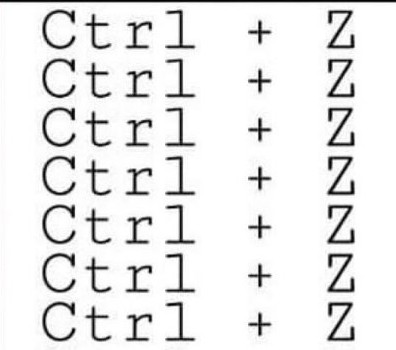
Índice
- Fundamentos de Git
- Ramificaciones
- Flujo de trabajo
- Entresijos internos de Git
Git
https://git-scm.com/GitHub
github.comdocs.github.com
Autenticación en Github con ssh
ssh-keygen -t rsa -b 4096 -C "your_email@example.com"
eval "$(ssh-agent -s)"
ssh-add ~/.ssh/id_ed25519
Configuraciones generales
# Configuracion
git --global user.name
git config --global user.email
git config --list
git help config
# Obtener ayuda
git --help
git help comando
man git
Funcionamiento básico
# iniciamos git
git init
# creamos un archivo llamado License
# vemos el estado
git status
# añadimos eñ archivo
git add License
# vemos el estado
git status
# confirmamos cambios
git commit
# vemos el estado
git status
Deshaciendo cosas
git reset HEAD archivo # saca del área de preparación: el archivo queda modificado no preparado
git checkout -- archivo # volver al estado en que estaba en la última confirmación
# Hack: nos movemos con un puntero, podemos rescatar archivos de versiones pasadas
git checkout commit --archivo
git checkout HEAD~1 -- archivo
# Deshacer el último commit
git reset --soft HEAD~1 # deja los cambios en preparación, no borra (digamos lectura pila no destructiva)
git reset --mixed HEAD~1 # los cambios previos quedan fuera del área de preparación
git reset --hard HEAD~1 # borra los cambios definitivamente (no se recomienda)
git revert commit # crea un nuevo commit con la confirmación anterior
git stash # guarda los cambios en el área stash, habrá que hacer stash pop para sacarlos
git rm # borra los archivos del repo y del disco
git rm --cached # borra los cambios del repo pero no del disco
git rm -r carpeta # eliminación recursiva
Otros comandos importantes
# status resumido
git status -s
# ver los cambios
git diff
# ver las diferencias de los cambios añadidos no confirmados
git diff --staged
# herramienta gráfica para ver los cambioss
git difftool
# Importante: nos muestra la historia del repo
git log
Trabajar con remotos
# clonar repo de github (tambien se puede hacer por protocolo ssh)
git clone git@github.com:OpenLab-uned/OpenLab.git
# así vemos su historia
git log
# diferencias introducidas en cada version
git log -p
# muestra las últimas dos versiones
git log -2
# gráfico ASCII de ramificaciones y uniones
git log --online --graph
# URLs asociadas al repo remoto
git remote -v
# descarga los cambios del remoto
git fetch
# descarga y fusiona los cambios del remoto (fetch + merge)
git pull
# Envía tus commits locales al repositorio remoto
git push
Ramificacions: ¿Qué es una rama?
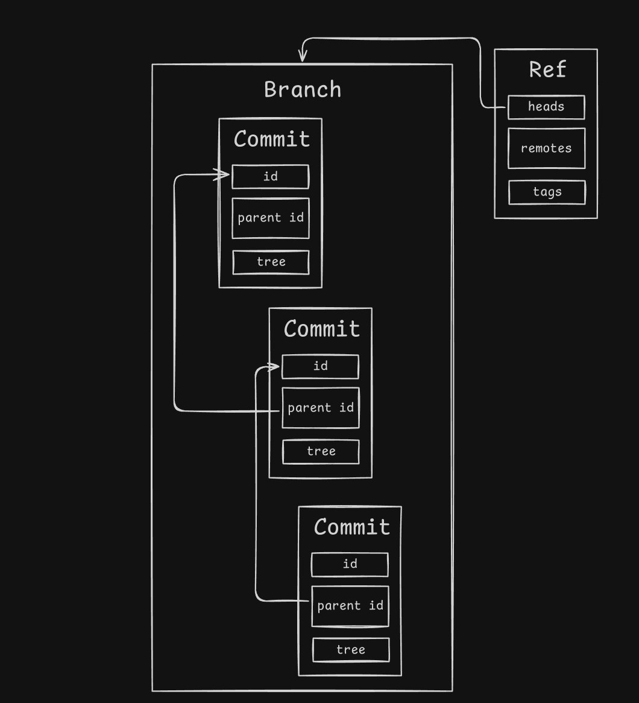Ramificaciones
https://learngitbranching.js.org/?locale=es_ES&NODEMO=
# crear rama
git branch testing
# cambiar a esa rama
git checkout testing
# hacer algun cambio añadirlo y confirmarlo
git commit -a -m "made a change"
git checkout master
# visualización
git log --oneline --decorate --graph --all
# borrar una rama
git branch -d nombre_rama
Procedimientos básicos de fusión
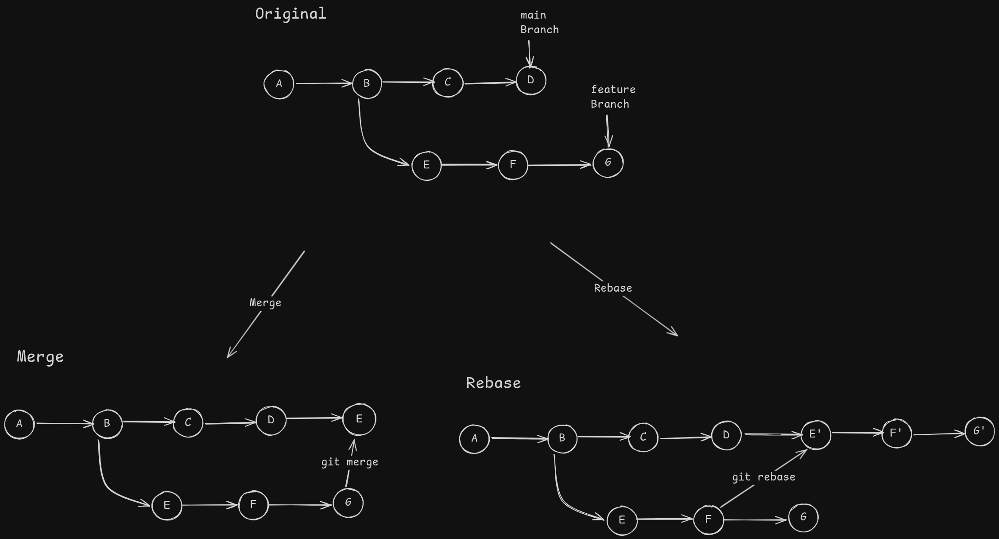Ramas remotas
# publicar
git push origin main
# listar las ramas de seguimiento que tienes asignada
git remote -vv
# listar tus ramas locales incluyendo a qué siguen cada una
git branch -vv
# traer y fusionar
git pull # fetch + merge
# borrar rama remota
git push origin --delete rama_remota
COLABORATORS.md y
IDEAS.md
Flujos de trabajo: ramas de larga duración
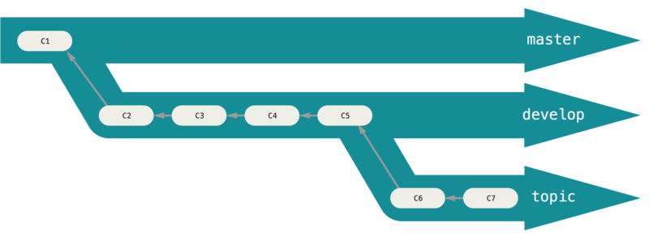Flujos de trabajo: ramas puntuales
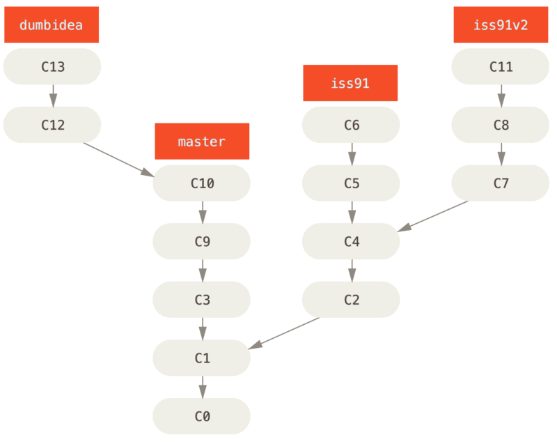Metodología TPP: Todo Para Producción
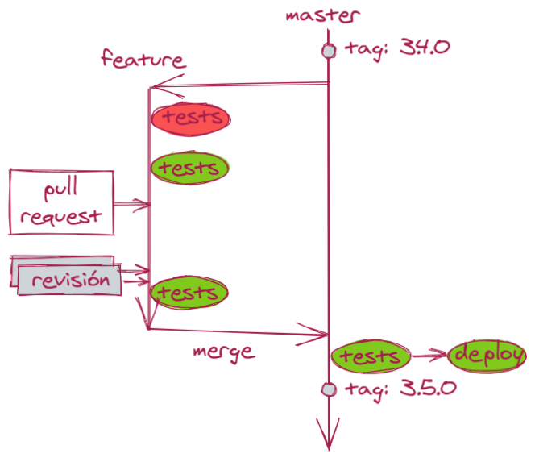Metodología TPP: Todo Para Producción para sistemas Online
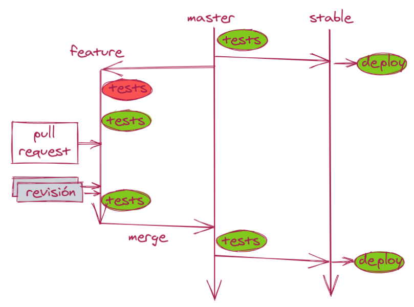Metodología GitFlow

Metodología GitHub Flow
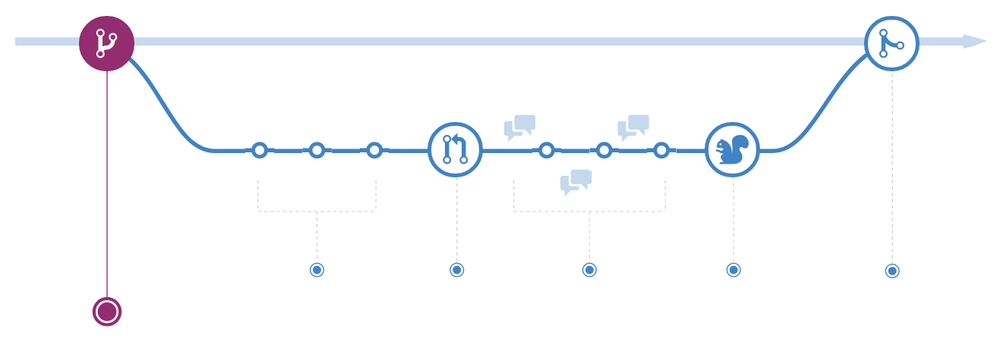Metodología: Administrador-Integración
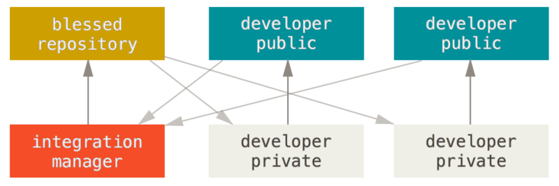Metodología Dictador-Tenientes
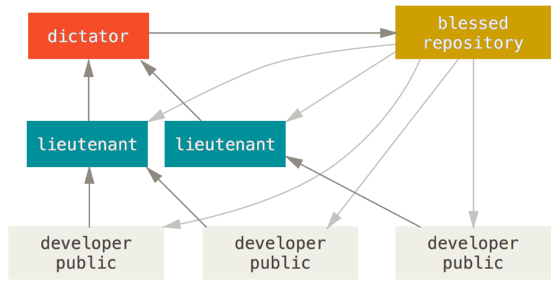Cómo está hecho
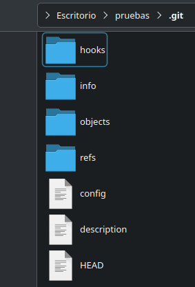Objetos blobs: contenido puro
git init test
cd test
# mira lo que hay en objects
find .git/objects -type f
# crea un blob directamente
echo "test content" | git hash-object -w --stdin
find .git/objects -type f
# salida .git/objects/d6/70460b4b4aece5915caf5c68d12f560a9fe3e4
git cat-file -p d670460b4b4aece5915caf5c68d12f560a9fe3e4
# test content
git cat-file -t d670460b4b4aece5915caf5c68d12f560a9fe3e4
# blob
Simulando control de versiones
echo "version 1" > test.txt
git hash-object -w test.txt
# → 83baae61804e65cc73a7201a7252750c76066a30
echo "version 2" > test.txt
git hash-object -w test.txt
# → 1f7a7a472abf3dd9643fd615f6da379c4acb3e3a
find .git/objects -type f
# podemos "volver atrás" sin commits:
git cat-file -p 83baae... > test.txt
cat test.txt # version 1
git cat-file -p 1f7a7a... > test.txt
cat test.txt # version 2
Objeto tree: simula un sist de archivos
# añadimos al índice la versión 1 de test.txt fingiendo que está ahí
git update-index --add --cacheinfo 100644 \
83baae61804e65cc73a7201a7252750c76066a30 test.txt
# escribimos un tree a partir del índice
git write-tree
# → d8329fc1cc938780ffdd9f94e0d364e0ea74f579
git cat-file -p d8329fc1cc93...
# salida: 100644 blob 83baae61804e65cc73a7201a7252750c76066a30 test.txt
# preparamos mas archivos
echo "new file" > new.txt
git update-index test.txt
git update-index --add new.txt
git write-tree
# → otro SHA
git cat-file -p tree_nuevo
# 100644 blob sha_new new.txt
# 100644 blob sha_v2 test.txt
Objetos commit: el pegamento
# primer commit
echo "first commit" | git commit-tree d8329fc1cc93...
# fdf4fc3344e67ab068f836878b6c4951e3b15f3d
git cat-file -p fdf4fc33...
# tree d8329fc1cc93...
# author ...
# committer ...
# first commit
echo "second commit" | git commit-tree tree2 -p fdf4fc33...
# cac0cab538b9...
echo "third commit" | git commit-tree tree3 -p cac0cab...
# 1a410efbd135...
git log --stat 1a410e
Referencias: ramas, HEAD, remotos
git update-ref refs/heads/main 1a410efbd13591db07496601ebc7a059dd55cfe9
git update-ref refs/heads/test cac0cab...
git log --oneline -graph -all
# remotos: ultima info que tienes de origin/main
cat .git/refs/remotes/origin/main
cat .git/HEAD
# ref: refs/heads/master
git checkout test
cat .git/HEAD
# ref: refs/heads/test
# también podemos manipularla
git symbolic-ref HEAD refs/heads/master
git symbolic-ref HEAD
# refs/heads/master
Refspecs y remotos: cómo decide Git qué traer/enviar
[remote "origin"]
url = https://github.com/usuario/proyecto.git
fetch = +refs/heads/*:refs/remotes/origin/*
Cómo opera git en esencia
- Crear objetos inmutables en .git/objects.
- Mover referencias para apuntar a esos objetos.
- Comprimir y optimizar esos objetos (gc, packs).
- Enviar y recibir objetos + refs con otros repos (fetch, push, refspecs).
Los comandos que usamos son combinaciones de todas estas operaciones básicas.